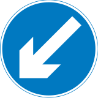
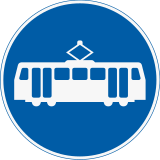
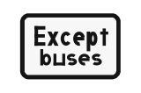
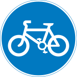

Signs: Mandatory
13 items: Drawn 12, Pending owner decision 1
 606Ahead onlyDrawn
606Ahead onlyDrawn 609Turn left ahead (right if symbol reversed)Drawn
609Turn left ahead (right if symbol reversed)Drawn
610Keep left (right if symbol reversed)Drawn 611Vehicles may pass either side to reach the same destinationDrawn
611Vehicles may pass either side to reach the same destinationDrawn 611.1Mini-roundaboutDrawn
611.1Mini-roundaboutDrawn 953Buses, pedal cycles and taxis onlyDrawn
953Buses, pedal cycles and taxis onlyDrawn
953.1Trams onlyDrawn953.2Pedestrian crossing point over tramwayPending owner decision
954Except busesDrawn 954.2Local buses excluded from restriction or prohibition conveyed by associated signDrawn
954.2Local buses excluded from restriction or prohibition conveyed by associated signDrawn
955Route to be used by pedal cycles onlyDrawn 956Route for use by pedal cycles and pedestrians onlyDrawn
956Route for use by pedal cycles and pedestrians onlyDrawn 957Segregated cycle and pedestrian routeDrawn
957Segregated cycle and pedestrian routeDrawnFaces marked from GOV.UK: traffic sign images © Crown copyright (Department for Transport), Open Government Licence v3.0; converted from the EPS.